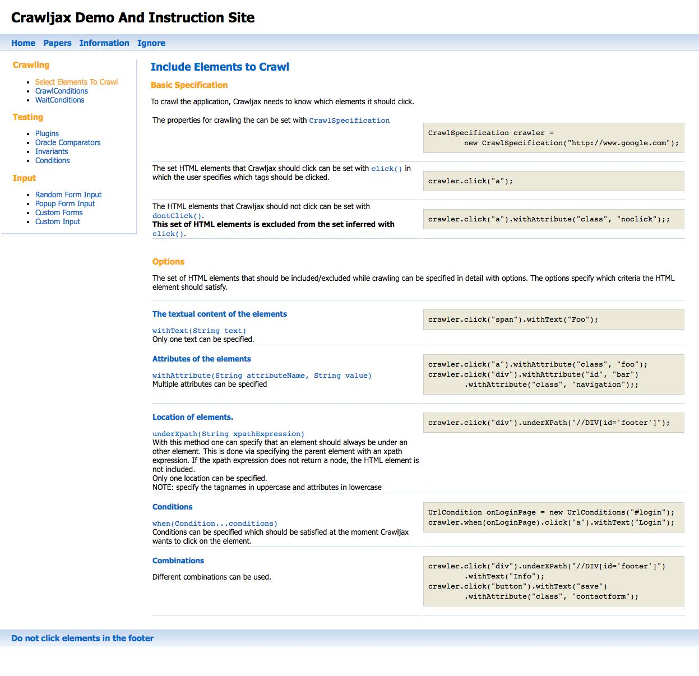

Captured DOM
<!DOCTYPE html><html xmlns="http://www.w3.org/1999/xhtml"><head>
<meta http-equiv="Content-Type" content="text/html; charset=iso-8859-1" />
<meta name="keywords" content="crawljax, crawljax, ajax, test, testing, plugins, invariants, conditions, form" />
<meta name="robots" content="index, follow" />
<meta name="description" content="Demo and instruction site for Crawljax" />
<title>Crawljax</title>
<link href="style.css" rel="stylesheet" type="text/css" />
<script language="javascript" src="lib/jquery-2.0.3.min.js" type="text/javascript"></script>
<script language="javascript" src="js/general.js" type="text/javascript"></script>
<script language="javascript" src="js/forms.js" type="text/javascript"></script>
</head>
<body style="">
<div id="header">
<h1>Crawljax Demo And Instruction Site</h1>
</div>
<div id="menubar">
<ul>
<li><a id="home" href="javascript:void(0)">Home</a></li>
<li><a id="papers" href="javascript:void(0)">Papers</a></li>
<li><a id="info" href="javascript:void(0)">Information</a></li>
<li><a id="ignore" class="ignore" href="javascript:void(0)">Ignore</a></li>
</ul>
</div>
<table border="0">
<tbody><tr><td valign="top">
<div id="left">
<h2>Crawling</h2>
<ul class="test">
<li><a href="javascript:void(0)" onclick="openPage('select.html')">Select Elements To Crawl</a></li>
<li><a href="javascript:void(0)" onclick="openPage('crawlConditions.html')">CrawlConditions</a></li>
<li><a href="javascript:void(0)" onclick="openPage('waitConditions.html')">WaitConditions</a></li>
</ul>
<h2>Testing</h2>
<ul class="test">
<li><a href="javascript:void(0)" onclick="openPage('plugins.html')">Plugins</a></li>
<li><a href="javascript:void(0)" onclick="openPage('oracleComparators.html')">Oracle Comparators</a></li>
<li><a href="javascript:void(0)" onclick="openPage('invariants.html')">Invariants</a></li>
<li><a href="javascript:void(0)" onclick="openPage('conditions.html')">Conditions</a></li>
</ul>
<h2>Input</h2>
<ul class="test">
<li><a href="javascript:void(0)" onclick="openPage('randomInput.html')">Random Form Input</a></li>
<li><a href="javascript:void(0)" onclick="openPage('popupInput.html')">Popup Form Input</a></li>
<li><a href="javascript:void(0)" onclick="openPage('forms.html')">Custom Forms</a></li>
<li><a href="javascript:void(0)" onclick="openPage('customInput.html')">Custom Input</a></li>
</ul>
</div>
</td><td valign="top">
<div id="content"><h1>Include Elements to Crawl</h1>
<h2>Basic Specification</h2>
<p>To crawl the application, Crawljax needs to know which elements it should click.</p>
<table>
<tbody><tr><td class="separator">
The properties for crawling the can be set with <span class="java">CrawlSpecification</span>
</td><td class="separator"><pre>CrawlSpecification crawler =
new CrawlSpecification("http://www.google.com");
</pre></td></tr>
<tr><td class="separator">
The set HTML elements that Crawljax should click can be set with <span class="java">click()</span>
in which the user specifies which tags should be clicked.
</td><td class="separator"><pre>crawler.click("a");
</pre></td></tr>
<tr><td class="separator">
The HTML elements that Crawljax should not click can be set with <span class="java">dontClick()</span>.<br />
<strong>This set of HTML elements is excluded from the set inferred with</strong> <span class="java">click()</span>.
</td><td class="separator"><pre>crawler.click("a").withAttribute("class", "noclick");;
</pre></td></tr>
<tr><td colspan="2" class="separator">
<br />
<h2>Options</h2>
<p>The set of HTML elements that should be included/excluded while crawling can be specified in detail with options.
The options specify which criteria the HTML element should satisfy.
</p>
</td></tr>
<tr><td class="separator">
<h3>The textual content of the elements</h3>
<span class="java">withText(String text)</span><br />
Only one text can be specified.
</td><td class="separator"><pre>crawler.click("span").withText("Foo");
</pre></td></tr>
<tr><td class="separator">
<h3>Attributes of the elements</h3>
<span class="java">withAttribute(String attributeName, String value)</span><br />
Multiple attributes can be specified
</td><td class="separator"><pre>crawler.click("a").withAttribute("class", "foo");
crawler.click("div").withAttribute("id", "bar")
.withAttribute("class", "navigation");;
</pre></td></tr>
<tr><td class="separator">
<h3>Location of elements.</h3>
<span class="java">underXpath(String xpathExpression)</span><br />
With this method one can specify that an element should always be under an
other element. This is done via specifying the parent element with an xpath expression.
If the xpath expression does not return a node, the HTML element is not included.<br />
Only one location can be specified.<br />
NOTE: specify the tagnames in uppercase and attributes in lowercase
</td><td class="separator"><pre>crawler.click("div").underXPath("//DIV[id='footer']");
</pre></td></tr>
<tr><td class="separator">
<h3>Conditions</h3>
<span class="java">when(Condition...conditions)</span><br />
Conditions can be specified which should be satisfied at the moment Crawljax wants to click
on the element.
</td><td class="separator"><pre>UrlCondition onLoginPage = new UrlConditions("#login");
crawler.when(onLoginPage).click("a").withText("Login");
</pre></td></tr>
<tr><td class="separator">
<h3>Combinations</h3>
Different combinations can be used.
</td><td class="separator"><pre>crawler.click("div").underXPath("//DIV[id='footer']")
.withText("Info");
crawler.click("button").withText("save")
.withAttribute("class", "contactform");
</pre></td></tr>
</tbody></table>
</div>
</td></tr>
</tbody></table>
<div id="footer">
<a href="#" onclick="addError('Dont click on elements in the footer')">Do not click elements in the footer</a>
</div>
<div id="errors" style="display: none;"></div>
</body></html>